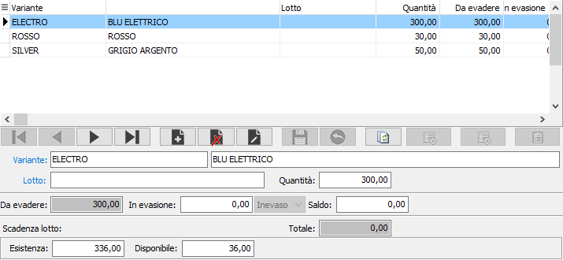
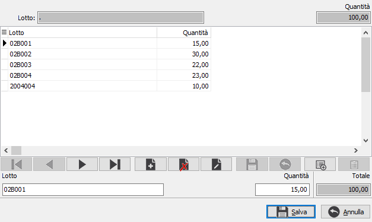

Dettaglio quantità in evasione (ordini/offerte/disposizioni/RDA)
Se la gestione dettagli è attiva e collegata al documento in evasione non sarà possibile inserire manualmente la quantità da evadere, ma al momento di accedere al campo quantità si aprirà la seguente finestra nella quale è possibile inserire il dettaglio delle quantità da evadere per i singoli lotti relativi al prodotto che è presente sul rigo del documento in evasione o singole varianti o singole ubicazioni in base a come configurato sul prodotto.
Per ogni dettaglio viene indicata, oltre la quantità inserita, la quantità da evadere, la quantità in evasione e l'eventuale saldo.
Nel caso in cui il documento che si sta compilando preveda la gestione del dettaglio quantità, sarà possibile inserire anche nuovi dettagli che non appartengano al documento in evasione.
Per i documenti del ciclo attivo, se gestiti i lotti ed impostato in configurazione lotti l'apposito parametro, sarà effettuata, in fase di chiusura della finestra di evasione ed avendo selezionato un lotto base, la scomposizione e l'assegnazione automatica a lotti esistenti selezionando le quantità in base alla priorità, presente sul prodotto, ed alla giacenza.

VARIANTE: codice della variante del dettaglio delle quantità; il campo non è modificabile eccetto nel caso di inserimento di una nuova variante.
UBICAZIONE: codice dell'ubicazione del dettaglio delle quantità; il campo non è modificabile eccetto nel caso di inserimento di una nuova ubicazione.
LOTTO: codice del lotto del dettaglio delle quantità; il campo non è modificabile eccetto nel caso di inserimento di un nuovo lotto.
QUANTITÀ: campo numerico che definisce la quantità per il singolo dettaglio; il campo non è modificabile eccetto nel caso di inserimento di un nuovo dettaglio.
IN EVASIONE: campo numerico che definisce la quantità da evadere per il singolo dettaglio.
SALDO: è la quantità necessaria per saldare il dettaglio; se la quantità in evasione è maggiore di quella da evadere questo campo viene compilato automaticamente per la differenza.
All'uscita dalla finestra di dettaglio, il totale del dettaglio stesso sarà riportato automaticamente nel campo quantità in evasione del rigo attivo ed eventualmente sarà richiesto il saldo manuale o saldato automaticamente se maggiore del da evadere.
Dal documento di evasione, una volta selezionato il rigo in evasione, accedendo alla finestra di dettaglio, se la composizione del dettaglio lo consente, sarà abilitato il pulsante di Scomposizione dettaglio.
 Il pulsante consente l'accesso alla finestra di scomposizione dettaglio da dove è possibile suddividere il dettaglio selezionato in raggruppamenti diversi, fino a concorrenza della quantità riportata sulla dettaglio stesso. La pressione del pulsante Esegui sostituisce il dettaglio selezionato con la scomposizione effettuata. L'entità della scomposizione varia in relazione alla composizione del dettaglio che si sta trattando.
Il pulsante consente l'accesso alla finestra di scomposizione dettaglio da dove è possibile suddividere il dettaglio selezionato in raggruppamenti diversi, fino a concorrenza della quantità riportata sulla dettaglio stesso. La pressione del pulsante Esegui sostituisce il dettaglio selezionato con la scomposizione effettuata. L'entità della scomposizione varia in relazione alla composizione del dettaglio che si sta trattando.

Se è attiva la gestione dei lotti sarà visualizzato il pulsante di Assegnazione.
 Il pulsante attiva la finestra di assegnazione lotti, se esistono lotti con esistenze positive per il prodotto attivo.
Il pulsante attiva la finestra di assegnazione lotti, se esistono lotti con esistenze positive per il prodotto attivo.

La finestra consente l'assegnazione dei lotti esistenti, in modo manuale, utilizzando il campo quantità in basso per indicare la quantità da utilizzare per quel lotto, oppure in modo automatico utilizzando il campo quantità totale richiesta, dove inserire  la quantità massima selezionabile ed il pulsante di Assegnazione. La pressione del pulsante effettua un conteggio sui lotti visualizzati, nell'ordine previsto sul prodotto, selezionando le quantità esistenti fino ad arrivare al valore inserito nel campo quantità totale richiesta; i lotti selezionati per il totale dell'esistenza appariranno evidenziati di giallo, quelli selezionati parzialmente di un colore diverso. La pressione del pulsante Salva effettuerà l'assegnazione definitiva.
la quantità massima selezionabile ed il pulsante di Assegnazione. La pressione del pulsante effettua un conteggio sui lotti visualizzati, nell'ordine previsto sul prodotto, selezionando le quantità esistenti fino ad arrivare al valore inserito nel campo quantità totale richiesta; i lotti selezionati per il totale dell'esistenza appariranno evidenziati di giallo, quelli selezionati parzialmente di un colore diverso. La pressione del pulsante Salva effettuerà l'assegnazione definitiva.